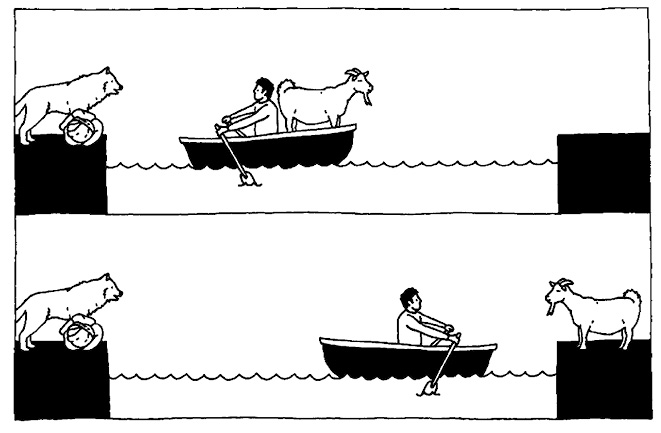
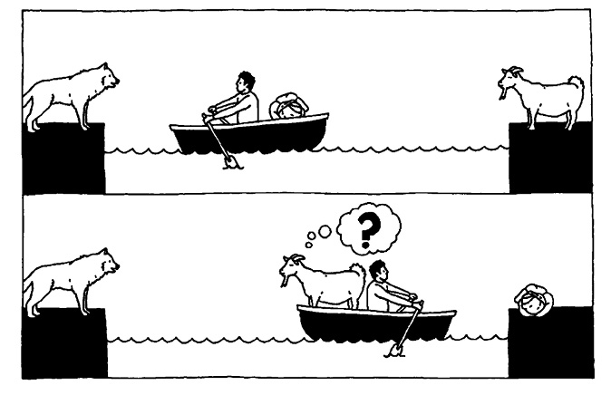
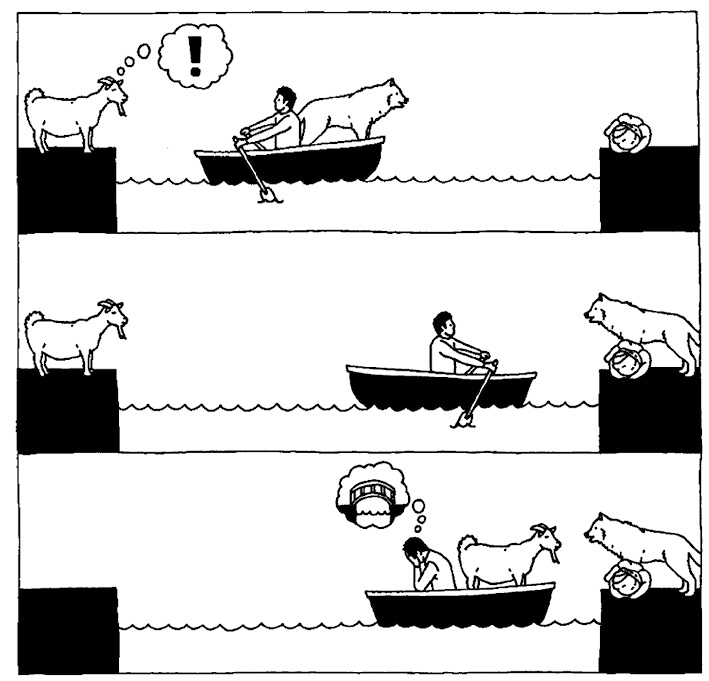
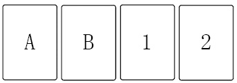

晚宴

卷心菜、花心丈夫和斑马
有趣的逻辑问题
从逻辑谈起顺理成章，因为逻辑推理是解决所有有趣的数学问题时都必须遵守的基本规则。逻辑可以说是所有数学的基础。然而，在有关趣味问题的所有专业术语中，逻辑问题是指仅用演绎推理就可以解决的问题。这类题目不需要任何算术或代数运算，也不需要随手画出图形。而且，它们不需要任何技术知识，是最容易理解的数学难题，问题的表述经常采用幽默有趣的语言。但是，我们很快就会看到，逻辑问题并不总是最容易解决的，因为它们经常会以不熟悉的方式欺骗我们的大脑。
逻辑问题至少可以追溯至法兰克国王查理曼大帝时代。
799年，统治西欧大部分地区的查理曼大帝收到了他曾经的老师阿尔昆的一封信，信中写道：“我出了一些有趣的算术题，供你消遣。”
阿尔昆是那个时代最伟大的学者。他在约克郡长大，上的是英国最好的学校——约克郡的天主教学校，后来还担任这所学校的校长。他的声名传到查理曼耳中之后，这位法兰克国王说服阿尔昆前往亚琛，帮忙管理宫廷学校。来到亚琛之后，阿尔昆创建了一个大型图书馆，随后又对加洛林王朝实施了教育改革。阿尔昆最终离开了查理曼的王宫，成为图尔修道院的院长。他就是在这个时候给查理曼写了上面那封信。
有人认为，连笔书写法是阿尔昆的发明，所以他和他手下的众多抄写员的写字速度都非常快。也有人认为，他是第一个用倾斜的曲线表示问号的人。由趣味问题早期历史中最主要的人物发明问号，的确顺理成章。
阿尔昆在他写给查理曼大帝的信中提到的那些算术题原件早已失传。问题大约有50道，历史学家称之为《青少年趣味智力问题》（Problems to Sharpen the Young）。历史学家认为，记录这些问题的现存最古老的手稿也比这封信晚100年，因此，除了阿尔昆这位当时最杰出的教师以外，还有谁能想出这样的算术题呢？
这是一个非常重要的文档，不仅是内容最丰富的中世纪趣味问题大全，还是首个包含了原创数学内容的拉丁文本。（罗马人修建了道路、引水渠、公共浴场和卫生系统，但他们从未开展过任何数学研究。）书中的第一个问题就让人忍俊不禁：
燕子邀请蜗牛去1里格[1]以外的地方共进午餐。如果蜗牛一天走1英寸[2]，它要花多长时间才能走到午餐地点？
答案是246年210天。还没等蜗牛到达那里，它早已经死了。
另一个问题如下：
某人问一群学生：“你们学校有多少学生？”其中一名学生回答说：“我不想直接告诉你，但是我会告诉你怎么找到这个答案。你先把学生人数增加一倍，然后把得数乘以3，再把乘积四等分。如果你把我加到其中一个等份中，人数就会变成100。”请问这所学校里到底有多少学生？
这真是一个古灵精怪的孩子！我把这个问题留给你们解决吧。
阿尔昆的措辞不仅古怪，而且富有开创性。这是人们第一次用幽默的方式激起学生对算术的兴趣。然而，这个文档之所以重要，不仅因为它在风格上有所创新，还因为它包含一些新的问题类型。有些问题需要演绎推理，但不需要计算。阿尔昆最著名的趣味问题无疑也是有史以来最知名的数学题。
狼、羊和卷心菜
一个人带着一匹狼、一只羊和一捆卷心菜来到了河边。他需要过河，但是河边只有一条船，而且他只能带一样东西上船。他不能把狼和羊一起留在河边，也不能让羊和卷心菜一起留在河边，因为在这两种情况下，前者都会吃掉后者。
那么，如何用最少的渡河次数把所有东西都带到河对岸呢？
这个问题之所以非常有趣，主要有两个原因。第一，问题设置的情景非常滑稽。你整个上午都在风尘仆仆地赶路，还要不停地把狼从羊身边赶走，也不能让羊靠近卷心菜。现在，你的麻烦更大了，因为你不得不乘坐一条小得可怜的船渡河。第二，答案也非常好玩和有趣。因为我们的英雄必须用一种凭直觉几乎不可能想到的方式，才能成功渡河[shu籍 分.享 V信jnztxy]。
下面你也来试试看吧。一篇13世纪的文章宣称所有5岁的孩子都能解决这个问题，所以不要有任何压力。
或者，你也可以跟我一起完成推理。
我们假设这位过路人在河的左岸。他带着三样东西，但是每次只能带一样上船。如果他把狼带走，把羊和卷心菜留在岸边，羊就会吃掉卷心菜。如果他带走卷心菜，狼就会吃掉羊。由于狼不吃卷心菜，所以根据排除法可知，第一次过河时，他只能带上羊。他将羊送到河的右岸之后，再返回左岸带走第二件东西。

现在，他可以选择带走狼或者卷心菜。假设他决定在第三次渡河时带上卷心菜，但到达右岸后，他又不能把羊和卷心菜一起留在那里，这时该怎么办呢？如果带着卷心菜一起回来，就意味着他没有取得任何进展，因为他刚刚才把卷心菜送到右岸，所以他必须带着羊回到左岸。这一步违背了人们的直觉。他的目标是把所有东西都带到河对岸，但他必须把某些东西送过河之后再带回来，之后再次把它们送过河。

经过4次渡河之后，他又回到了左岸，此时狼和羊都在左岸。他把羊拴好，然后带着狼第五次渡过了河。到了右岸之后，因为狼对卷心菜不感兴趣，所以他现在需要做的就是再次回到左岸，把羊带过河就可以了。经过7次渡河，我们的主人公终于完成了这项麻烦的任务。
（本题还有一个等效答案。如果过路人在第三次渡河时选择带上狼，逻辑推理过程不变，他同样需要通过7次渡河来完成任务。）

《青少年趣味智力问题》还记录了其他渡河难题，比如下面这个与卧室闹剧非常相似的问题。
三个男人和他们的妹妹
三个男人分别带着自己的一个妹妹外出，他们需要渡过一条河，但每个男人都对另外某个男人的妹妹有觊觎之心。来到河边之后，他们发现只有一艘小船可以渡河，而且一次只能载两个人。如果妹妹与除自己哥哥以外的男人独自乘船，就会受到欺负。请问，用什么办法可以让所有人都过河，而且三个妹妹都不会受欺负？
由于阿尔昆的措辞有些歧义，所以这个问题可以有两种不同的理解。没有争议的是，三对兄妹都必须渡过这条河，而他们可以自由使用的工具只有一条每次可载两个人的船。但是，还需要满足下面其中一个限制条件：第一，小船绝对不能载没有血缘关系的一男一女；第二，如果岸上有其他男性，那么小船在岸边上客或下客时，船上的女性必须由哥哥陪同。如果要满足第一个条件，那么所有人全部到达河对岸，一共需要渡河9次。我认为，第二个条件更符合题意。在这种情况下，小船需要渡河11次，才能完成任务。请大家试着找到这两种渡河方法。
1 000多年以来，渡河问题给男女老少带来了无穷的欢乐。在世界各地传开之后，这些问题发生了一些变化，当地人关心的问题也不断加入。在阿尔及利亚，狼、羊和卷心菜被换成了豺、羊和一捆干草；到了利比里亚，又被换成了猎豹、鸡和大米；到了桑给巴尔岛之后，又变成了豹子、羊和树叶。三个男人带妹妹出游的问题也随着时代的变化而改变：好色的男人变成了嫉妒的丈夫，他们禁止妻子和其他男人同船渡河。到了13世纪，有一个版本还给所有人起了名字，三对夫妇分别是：贝托尔德和贝尔塔，格哈德斯和格蕾塔，罗兰德斯和罗萨。答案也被编成了两句六步格的诗。如果你懂拉丁文，不妨读一读这两句诗：
Binae, sola, duae, mulier, duo, vir mulierque,
（二女，一女，二女，一女，二男，夫妻俩，）
Bini, sola, duae, solus, vir cum muliere.
（二男，一女，二女，一男，夫妻俩。）
到了17世纪，题中的夫妻变成了主仆。所有主人都禁止他们的仆人与另一位主人同行，以防自己的仆人被那位主人谋杀。19世纪的社会冲突发生了转变：主仆变成了主人和雇工，同时规定在河的任意一边，雇工的人数都不可以超过主人的人数，以防他们萌生抢劫主人的想法。后来，仇外心理取代了性别歧视和阶级斗争，经典的版本变成了三个传教士和三个饥饿的食人者一起出行。从这道趣味问题，我们不仅可以了解数学的发展过程，还可以了解社会阶层的演变历程。
下面这道渡河问题出现于20世纪80年代。世纪之交，微软公司在他们的面试中就采用了这个问题，以测试未来员工解决问题的能力。这道题非常棘手，解题的关键是让你的逻辑思维战胜直觉。
过桥
约翰、保罗、乔治和林戈4个人站在峡谷的一边，面前是一座摇摇欲坠的桥通向峡谷的另一边，每次最多只能允许两个人通过。由于是晚上，桥又不太牢固，所以不管是谁，过桥时都必须拿着手电筒。但他们只有一个手电筒，而且峡谷很宽，无法把手电筒从一边扔到另一边，所以手电筒只能由人拿着。约翰可以在1分钟内走过大桥，保罗、乔治和林戈分别需要2分钟、5分钟和10分钟。两人同行时的速度等于两人中较慢的那个人的速度。请问，4人如何在最短的时间内通过峡谷？
要解决这个问题，最显而易见的方法就是约翰每次陪着一个朋友过桥，这样他可以用最快的速度回来接送一个人。选择这个方法的话，一共需要2 + 1 + 5 + 1 + 10 = 19分钟。但是有没有更快的方法呢？
我们回头看看阿尔昆的《青少年趣味智力问题》，里面有这样一个问题：
在耕耘了一整天后，牛在最后一道犁沟里留下了多少个脚印？
答案当然是一个也没有！无论有多少脚印，都会被犁弥平。这是谜题文学中最早出现的难题。
《青少年趣味智力问题》还收录了一些其他类型的题目，包括“亲属关系问题”，这类题目要求你找出非传统家庭成员之间的关系。这是我最后一次从这位古代约克郡人的作品中挑选问题，后面的题目都是1 000年之后才出现的。
双重关系
如果两个男人分别娶了对方的母亲，那么他们各自的儿子彼此之间是什么关系？
我发现亲属关系问题特别有趣。在解决这类问题时，不管我怎么努力地保持一本正经，并认真地进行逻辑推理，我都会忍不住好奇问题背后到底有怎样稀奇古怪的故事。
自中世纪以来，这类问题一直占据着非常重要的地位。维多利亚时代的人可能认为颠覆传统家庭结构的暗示具有强烈的吸引力。
刘易斯·卡罗尔（Lewis Carroll）是有关亲属关系问题的狂热分子，下一个问题就选自他的《混乱不堪的故事》（A Tangled Tale）中的一个章节［卡罗尔称之为“节”（knot）］。我认为，1885年出版的这部著作是同类作品的巅峰之作。
晚宴
某州州长想举办一个小型宴会，他希望邀请的客人包括他父亲的妹夫（姐夫）、他哥哥（弟弟）的岳父、他岳父的哥哥（弟弟）、他姐夫（妹夫）的父亲。猜猜看，到底有多少客人？
要让晚宴的规模尽可能小，客人最少有多少人？
在推广逻辑问题的趣味性方面，《爱丽丝梦游仙境》和《爱丽丝镜中奇遇记》的作者刘易斯·卡罗尔厥功至伟，因为这两部小说包含大量的悖论、游戏和哲学趣题。卡罗尔原名查尔斯·路特维奇·道奇森（Charles Lutwidge Dodgson），是牛津大学的数学教授。他还写过三本数学趣味问题方面的书，但都没有爱丽丝系列那么成功，原因之一是那三本书涉及的数学知识太难了。
然而，卡罗尔是最早利用说真话、说谎话来设计趣味问题的人之一（后来，这类逻辑趣题非常流行）。他发现，在人们互相指责对方说谎时，我们有可能从中推断出到底谁说的是真话。1894年，他在日记中写道：“在过去的几天里，我已经解决了设计‘谎言’困境时遇到的几个奇怪的问题。”下面是他在日记中提到的那个逻辑趣题，我用大家都熟悉的语言进行了改写。同年晚些时候，这个逻辑趣题被印成了一个未署名的小册子。
谁在说谎
波尔塔说葛丽塔在撒谎。
葛丽塔说罗莎在撒谎。
罗莎说波尔塔和葛丽塔都在撒谎。
谁说的是真话？
在分辨谁在说真话、谁在说谎话之前，我们先看看下面这道在20世纪30年代早期风靡一时的逻辑趣题。你猜得出答案吗？
史密斯、琼斯和罗宾逊
史密斯、琼斯和罗宾逊是火车司机、消防员和警卫，但是我们不知道哪个人做的具体是哪份工作。火车上有三名乘客，巧合的是他们的姓氏与那三人相同。我们在称呼这三名乘客时，会在他们的姓氏后面加上“先生”，以示区别。因此，三名乘客分别被称作史密斯先生、琼斯先生和罗宾逊先生。
罗宾逊先生住在利兹。
警卫住在利兹和设菲尔德之间的某个地方。
琼斯先生的年薪是1 000英镑2先令1便士。
史密斯的台球水平比消防员高。
与警卫距离最近的邻居（三名乘客之一）的收入正好是警卫的三倍。
与警卫姓氏相同的乘客住在设菲尔德。
请问，火车司机姓什么?
（原文使用的是英国旧货币制度，我在改写这道题时予以保留，这是因为1 000英镑2先令1便士这个金额有一个非常重要的作用，即不能被3整除。）
我非常喜爱这道题，它会激发你当侦探的欲望。乍一看，似乎信息非常少，不足以帮我们找出答案。但是，一旦你把这些线索汇总起来，你就会发现每个人的准确身份。
1930年4月，“史密斯、琼斯和罗宾逊”问题出现在伦敦文学期刊《河滨杂志》（The Strand Magazine）上。随后不久，这道题就在英国掀起了一股热潮，全国各地的报纸纷纷转载，并迅速向全世界传播。1932年，《纽约时报》刊载了这道深受欢迎的趣味问题，同时推出了美国版本，把利兹和设菲尔德换成了底特律和芝加哥。
解决这个难题最直接的方法就是画两个表格。接下来，我们一起来做这道题。我们需要找到史密斯、琼斯和罗宾逊这三个人谁是火车司机、谁是消防员、谁是警卫，因此，如下方左图所示，我们画一个包含工作人员姓名和职业的表格。这道题还涉及三名乘客和三个地点，因此，如下方右图所示，我们画出第二个表格，并标注出史密斯先生、琼斯先生和罗宾逊先生，以及利兹、设菲尔德及两地之间。
第一条可靠的信息是罗宾逊先生住在利兹，所以我们可以在罗宾逊先生/利兹的方格里打钩，在表示罗宾逊先生居住在其他地方以及表示其他人居住在利兹的方格里都打上叉。我们还需要汇总其他线索，在更多的方格里打钩或者打叉。例如，居住地与警卫距离最近的那名乘客，收入是警卫的三倍。根据这条信息，我们可以确定琼斯先生不是那名与警卫住得最近的邻居，因为他的薪水无法被分成三等份。好了，剩下的侦探工作就交给你们来完成吧。
在“史密斯、琼斯和罗宾逊”问题被公布的当月，它的创造者亨利·恩斯特·杜德尼（Henry Ernest Dudeney）离开了人世，终年73岁。杜德尼为《河滨杂志》撰写了20多年的趣味问题，是他那个时代最杰出的数学趣题设计师，但是直到他死后，“史密斯、琼斯和罗宾逊”问题才帮助他取得了一生中最大的成就。《新政治家》（New Statesman）杂志再次刊登这道趣味问题之后，该杂志桥牌专栏和填字谜专栏的主编休伯特·菲利普斯（Hubert Phillips）称：“结果令人震惊。潮水般涌来的答案（杂志并没有邀请读者答题）充分说明，有许多人都对推理类趣味问题感兴趣，而且兴趣非常强烈。”
菲利普斯是英国自由党经济学讲师和经济顾问。在这道趣味问题流行之时，40岁出头的他刚刚转行，进入了新闻行业。这道题引起了菲利普斯前所未有的兴趣，他因此放弃了桥牌专栏，改为定期向读者奉献一道逻辑趣题。整个20世纪30年代，菲利普斯成为一位多产的创新型数学（及其他类型）趣题发明者，把这10年变成了趣味问题的黄金时代。
下面向大家介绍他的两道趣味问题，这也是我非常喜欢的两个问题。第一道题是一个悬疑类问题，第二道题则是以一种诙谐的方式向传统的亲属关系问题致敬。
圣丹德海德学校
福威尔市的圣丹德海德学校在曲棍球方面享有很高的声誉，但是在诚实方面却名声不佳。最近，11名女球员在迪德尔赫姆打了一场比赛，之后女孩们一起去听音乐会。最后，负责管理球队的女教师普里小姐集合了队伍，她看到有10名女孩是从音乐厅出来的，还有一个是从隔壁电影院出来的。当她问去看电影的人是谁时，团队成员七嘴八舌地说起来。
琼·贾金斯说：“是琼·特威格。”
格蒂·盖斯说：“是我。”
贝茜·布朗特说：“格蒂·盖斯在撒谎。”
莎莉·夏普说：“格蒂·盖斯在撒谎，琼·贾金斯也撒谎了。”
玛丽·史密斯说：“是贝茜·布朗特。”
多萝西·史密斯说：“不是贝茜，也不是我。”
凯蒂·史密斯说：“不是姓史密斯的女生。”
琼·特威格说：“要么是贝茜·布朗特，要么是莎莉·夏普。”
琼·福赛特说：“琼·贾金斯和琼·特威格都在撒谎。”
劳拉·兰姆说：“姓史密斯的三个女生中只有一个人说了真话。”
弗洛拉·弗卢梅里说：“不对，姓史密斯的三个女孩中有两个在说真话。”
已知这11个女孩中至少有7个人没说真话，请问，去看电影的人到底是谁？
亲属关系问题
金斯利代尔一定是一个缺少适婚女子的地方，因为有5个男人分别娶了其中另一个人的寡居母亲。詹金斯的继子汤姆金斯是帕金斯的继父，詹金斯的母亲是沃特金斯夫人的朋友，沃特金斯夫人的婆婆是帕金斯夫人的表姐妹。
请问，西姆金斯的继子叫什么名字?
这类逻辑问题现在通常被称为“表格”问题，因为解决它们的最好方法就是绘制一个包含所有可能选项的表格。其中最著名的斑马问题是20世纪60年代的作品，作者身份不明。
斑马问题最早出现在1962年的《生活》杂志国际版上。人们通常称其为爱因斯坦的逻辑趣题，因为这道题的作者据说是爱因斯坦。不过，考虑到爱因斯坦于1955年去世，这个说法的可靠程度值得商榷。此外，经常有人声称只有2%的人能做对这道题。这个数据可能并不真实，但至少说明这是一道非常难的趣味问题。
斑马问题
1. 一共有5间房子。
2. 苏格兰人住在红色房子里。
3. 狗是希腊人的。
4. 住在绿色房子里的人喝咖啡。
5. 玻利维亚人喝茶。
6. 象牙色房子的右手边是绿色房子。
7. 蜗牛的主人穿着粗革皮鞋。
8. 穿着橡胶底鞋子的人住在黄色房子里。
9. 住在正中间房子里的人喜欢喝牛奶。
10. 丹麦人住在第一间房子里。
11. 穿着勃肯鞋的人住在狐狸主人的隔壁。
12. 穿着橡胶底鞋子的人住在马主人的隔壁。
13. 穿拖鞋的人喜欢喝橙汁。
14. 日本人穿人字拖。
15. 丹麦人住在蓝色房子的隔壁。
请问，喜欢喝水的人是谁？斑马主人是谁？
为便于区分，5间房子被漆成了不同的颜色，居住在房子里的人来自不同的国家，养着不同的宠物，喝不同的饮料，穿不同的鞋子。在《生活》杂志的版本中，这些人还抽不同品牌的美国香烟。鉴于爱因斯坦以从来不穿袜子而闻名于世，我把香烟换成了鞋子。
《生活》刊登了这道趣味问题之后，读者的反应非常热烈。在接下来的一期中，编辑把它放到了封面的显要位置，同时指出：“上一期杂志刚刚开始发售，读者来信就如潮水般涌入我们的收发室。这些信件来自律师、外交官、医生、工程师、教师、物理学家、数学家、上校、士兵、牧师和家庭主妇，还有一些知识特别渊博、逻辑性特别强的孩子。这些人的居住地非常分散，彼此相距几千英里[3]之遥，有的住在英格兰农村，有的住在法罗群岛，有的住在利比亚沙漠，还有的住在新西兰。但是他们都收到了上天的相同的恩赐——超高的智力水平。”我的读者，你可别让我失望啊。
如果你喜欢上面这道题，那么下面这道伤脑筋的题你肯定也会喜欢。它是由剑桥大学的年轻逻辑学家马克斯·纽曼（Max Newman）于1933年设计的，刊登在休伯特·菲利普斯在《新政治家》杂志主持的一个专栏上。菲利普斯借用莎士比亚戏剧《暴风雨》（The Tempest）中那个遭到奴役的半人半兽的角色，作为趣味问题的主人公。很多凯列班系列趣味问题是多个数学家合作设计的产物，这一道是其中的代表作。
这道趣味问题堪称天才之作。题中的信息似乎远不足以解决问题，但是所有需要的信息其实都包含其中。《数学杂志》（The Mathematical Gazette）称，纽曼的这道趣味问题是一件“珍品”，“在你成功解决之前你绝不敢相信它竟然有解”。这道题曾让我吃尽苦头，但是这并不妨碍我欣赏它的言简意赅，以及答案蕴含的雅致之美。
凯列班的遗嘱
人们打开凯列班的遗嘱，发现它包含以下条款：
我给洛、Y.Y.和“批评家”各留了10本书，他们必须按照下列要求决定挑选的先后次序：
（1）任何见过我打绿色领带的人都不得在洛之前挑选；
（2）如果1920年Y.Y.不在牛津，那么曾借雨伞给我的人不能第一个挑选；
（3）如果Y.Y.或“批评家”拥有第二选择权，那么“批评家”要排在第一个坠入爱河的人前面。
遗憾的是，洛、Y.Y.和“批评家”都不记得任何相关事实，但家庭律师称，如果问题本身没有毛病（即问题中没有包含与答案无关的多余语句），就可以推断出相关信息和先后次序。
请问，遗嘱规定的先后次序是什么？
洛、Y.Y.和“批评家”是菲利普斯在《新政治家》的同事，但是这个事实对于解题几乎没有帮助。我们必须注意到一个关键点：问题中提到的每一条信息都与答案相关，所以，只要某个语句的某个内容没有在解题过程中用到，得出的答案就是错误的。纽曼的大脑不仅善于设计难题，后来还在更严肃的场合中发挥了解决难题的作用。在第二次世界大战期间，他在布莱奇利公园[4]负责一个叫作纽曼利的密码破译部门。后来，该部门研发了世界上第一台可编程电子计算机——巨人计算机。纽曼是理论计算机科学之父阿兰·图灵（Alan Turing）的同事和好友。事实上，图灵那篇具有里程碑意义的论文《论可计算数》（On Computable Numbers）正是在听了纽曼在剑桥的授课、受到启发之后完成的。战争结束后，纽曼在曼彻斯特建立了英国皇家学会计算机实验室，并说服图灵加入了他的队伍。
下面这个有趣的问题叫作“三角枪战”（该问题最早是由菲利普斯提出的）。我对问题进行了重述，以致敬某部最后只有一个人幸存的电影。
三角枪战
善良、邪恶和丑陋准备参加三角枪战。三个人所在的位置构成一个三角形。规则要求，丑陋第一个开枪，邪恶第二，善良第三，之后再次轮到丑陋，然后是邪恶和善良，按此次序进行下去，直到剩下最后一个人。丑陋的枪法最差，命中率只有1/3。邪恶的枪法强于丑陋，三枪可以命中两枪。善良的枪法最好，百发百中。
假设每个人都进行了最有效的部署，绝不会被流弹误伤。
请问，丑陋应该瞄准谁开枪，他生还的概率最大？
下面三道逻辑趣题是由菲利普斯推广的（尽管这三道题的作者不是菲利普斯）。这种类型的趣味问题看起来就像一场独幕剧，设计巧妙，一旦成功解决，会给人一种回味无穷的感觉。
苹果和橙子
你面前有三个盒子，第一个盒子上的标签是“苹果”，第二个是“橙子”，第三个是“苹果和橙子”。一个盒子里装着苹果，另一个盒子里装着橙子，还有一个盒子里装着苹果和橙子。然而，所有标签都没有贴在对应的盒子上。你的任务是重新贴好这些标签。你无法看到（或者闻到）盒子里装的是什么，但是你可以把手伸到其中一个盒子里，并拿出一个水果。
选择哪个盒子，可以让你在看到从中拿出的水果后，就能推断出每个盒子里装的是什么水果？
盐、胡椒和调味酱汁
席德·索尔特、菲尔·佩珀和里斯·莱利士[5]共进午餐。某一时刻，他们中的一个人注意到他们三人中正好一个人拿起了盐，一个人拿起了胡椒，一个人拿起了调味酱汁。
拿着盐的人说：“更有趣的是，我们每个人拿起的调味品都跟自己的姓氏不对应！”
“请把调味酱汁递过来！”里斯说道。
如果这位观察者拿的不是调味酱汁，那么菲尔拿起的调味品是什么？
石头、剪刀、布
亚当和夏娃玩石头、剪刀、布的游戏，一共玩了10次。已知以下信息：
• 亚当出过3次石头、6次剪刀和1次布。
• 夏娃出过2次石头、4次剪刀和4次布。
• 二人没有出现过平局。
• 亚当和夏娃出各种手势的先后次序是未知信息。
请问，谁赢了？比分是多少？
当菲利普斯于1964年去世时，《纽约时报》上的讣告称：“可能有人会说，他在雨雪天气里给我们带来的欢乐比其他任何一位作家都多。”除了趣味问题以外，他还编写了数以千计的填字游戏，以及与桥牌有关的大量内容（他是英格兰桥牌队队长）。他写过打油诗、200多部侦探小说和一篇关于足球的学术论文。在BBC（英国广播公司）的《全英问答竞赛》（Round Britain Quiz）中，他的诙谐有趣深受人们的欢迎。尽管涉猎如此广泛，他在趣题文化领域仍然起到了深远的影响。
菲利普斯是第一个让参与者相互透露信息的趣味问题设计者，正因为如此，他成为2015年风靡世界的谢莉尔生日问题的鼻祖。
最初，这类趣味问题是围绕脸上的污垢设计的，最简单的版本只涉及两个人。
泥巴俱乐部
阿尔伯塔和伯纳黛特在花园里玩泥巴，然后进了屋。姐妹俩都可以看到对方的脸，但看不到自己的脸。她们的父亲看了看她们两个，然后告诉她们，至少有一个人的脸上有泥巴。
他让姐妹俩背对着墙站好，然后说：“脸上有泥巴的人向前走一步。”
姐妹俩谁都没动。
“脸上有泥巴的人向前走一步。”父亲又说了一遍。
请问，姐妹俩会怎么做？为什么？
在解这类问题时，我们必须假设故事里的人（即使是那些淘气的孩子）都非常诚实，而且拥有专业逻辑学家的分析技巧。
下面，我和大家一起解这道题。我们知道至少有一个女孩脸上有泥巴，所以一共有三种可能的情况：第一，阿尔伯塔脸上有泥巴，伯纳黛特的脸很干净；第二，情况刚好跟第一种相反；第三，两个人脸上都有泥巴。
先考虑第一种情况，即阿尔伯塔脸上有泥巴，而伯纳黛特的脸很干净。（请注意，这些信息只有我们局外人知道，姐妹俩并不知道。她们掌握的信息仅源自她们的观察及在此基础上做出的推断。）
让我们进入阿尔伯塔的大脑。她看向伯纳黛特，结果看到了一张干净的脸。因为她知道至少有一个人脸上有泥巴，所以她可以肯定那个人就是她自己。随后，她的父亲让脸上有泥巴的人向前走一步，但是阿尔伯塔站在那儿没动。因此，我们可以断定这种情况是不正确的，因为如果阿尔伯塔是个诚实的孩子，她就会站出来。
再考虑第二种情况，即伯纳黛特的脸上有泥巴，而阿尔伯塔的脸是干净的。
这种情况的逻辑推理过程与第一种情况相同，因此这种情况也可以排除。
接下来考虑第三种情况，即两个女孩的脸上都有泥巴。
我们仍然从阿尔伯塔的角度考虑这种情况。她看向伯纳黛特，结果看到了一张有泥巴的脸。她知道至少有一个人的脸上有泥巴，但她无法推断出自己的脸上有没有泥巴，因为无论她的脸上有没有泥巴，“至少有一个人的脸上有泥巴”这句话都是成立的。所以，当她的父亲让脸上有泥巴的人站出来时，她没有动。重要的是，阿尔伯塔之所以没有站出来，是因为她不知道自己的脸上究竟有没有泥巴，而不是因为她知道自己的脸很干净。
同样，伯纳黛特看到了一张有泥巴的脸，因此她也无法确定自己的状况。当她的父亲让脸上有泥巴的人站出来时，她同样不会动。
由此我们可以肯定第三种情况是正确的，因为在父亲第一次让脸上有泥巴的人站出来时，这两个女孩都没有动。那么，接下来会发生什么呢？
阿尔伯塔的脸上可能有泥巴，也可能没有泥巴。不过，她可以排除后一种可能性，因为如果她的脸是干净的，伯纳黛特在看到她的脸后就可以推断出自己的脸比较脏，并且在她们的父亲第一次提出要求时就会站出来。因此，阿尔伯塔推断出自己的脸上有泥巴。出于同样的原因，伯纳黛特也推断出自己的脸上有泥巴。于是，在她们的父亲第二次让脸上有泥巴的人站出来时，姐妹俩都会向前走一步。
总而言之，在父亲要求脸上有泥巴的人站出来时，由于姐妹俩都能看到彼此的脸上有泥巴，所以她们无法推断自己的情况。但是，当她们意识到对方也无法推断出自己的状况时，她们就会从中得到更多的信息，从而推断出她们两个人的脸上都有泥巴。太棒了！
菲利普斯发表第一个“脸上污垢”问题的时间是在1932年，但脸上污垢的逻辑推理的历史更悠久。例如，法国的猜谜游戏“看谁笑到最后”至少可以追溯到16世纪。根据规则，一名玩家用沾满烟灰的手指在其他成员的脸上留下印迹，所有玩家都要想方设法成为笑到最后的那个人。法国作家弗朗西斯·拉伯雷（François Rabelais）在那部滑稽怪诞的代表作《巨人传》（Gargantua and Pantagruel）中就曾提到这个游戏。在这部小说19世纪初的德译本中，这个游戏发生了一个新颖的变化。参与游戏的所有人都要捏右边那个人的脸颊，但是其中有两个人用烧焦的粉笔把自己的手指弄黑了，所以有两个人的脸上会有粉笔灰。该德译本的译者在注释中解释说：“这两个人都认为大家在笑话另一个人，却不知道自己遭到了愚弄。”
在菲利普斯发表了他的“脸上污垢”问题后不久，这个趣味问题就出现了大量的变体，并引起了学者们的兴趣。俄裔美国宇宙学家乔治·伽莫夫（George Gamow）是宇宙起源大爆炸理论最早的倡导者之一，他也创作了一些精彩的科普作品，其中包括《从一到无穷大》（One Two Three...Infinity，1947年出版）。这本书至今仍是我的最爱之一，让人爱不释手。1956年，伽莫夫为康威尔航空公司提供咨询服务，数学家马文·斯特恩（Marvin Stern）也在这家公司任职，但两个人的办公室不在同一楼层。他们发现，每次去对方的办公室时，电梯几乎都在朝着相反的方向运行。这显然是一个难以解决的问题。在讨论其背后的数学原理的过程中，他们建立了深厚的友谊，并最终决定合作撰写《趣味数学问题》（Puzzle-Math）一书。下面三个“脸上污垢”问题就来自这本书。
脸上有烟灰的是你
火车上有三名乘客，各自忙着手头的事情。这时候，从一旁经过的火车头冒出的烟突然从窗户吹了进来，三个人的脸上都蒙上了一层烟灰。正在埋头看书的乘客——阿特金森小姐，抬头看了看，然后“咯咯”地笑了起来。这时，她发现另外两名乘客也在笑。阿特金森小姐与同车厢的另外两名乘客一样，都以为自己的脸是干净的。此外，阿特金森小姐还以为，那两名乘客之所以会笑，是因为他们看到对方的脸很脏。但阿特金森很快就明白过来，她拿出手帕擦了擦自己的脸。
假设这三名乘客的行为都合乎逻辑，而阿特金森小姐的逻辑推理能力更强。请问，她是怎么知道自己的脸也脏了的？
《趣味数学问题》并不像伽莫夫的其他书那样令人难忘，但这本书中仍然包括一道设计得非常巧妙的逻辑问题。伽莫夫认为这道题是伟大的苏联天体物理学家维克多·阿姆巴楚米扬（Victor Ambartsumian）的作品。我对这道题重新进行了表述，并略做改动，主要是其中人物的性别。这道题难度很大，但如果你采用前两个问题中的逻辑推理方法，就应该可以解决。即使解决不了，你也可以看看书后的答案，并发出惊叹声。
40名不忠的丈夫
某个小镇有40名欺骗妻子的丈夫。所有女人都知道，除了自己的丈夫之外，其他男人都不忠。换句话说，每个妻子都认为自己的丈夫是忠诚的，而其他39个男人都有问题。小镇道德堕落的名声传到了都城，国王听说后颁布了一道法令，惩罚行为不检的丈夫。这道法令规定，如果妻子发现丈夫不忠，她必须于当天中午在市镇广场杀死自己的丈夫。
国王接着说道：“我知道至少有一名丈夫对妻子不忠，我要求你们必须采取行动。”
接下来会发生什么呢？
乍一看，这道题似乎根本无解，因为妻子们已经知道有39个男人不忠。国王说“至少有一名丈夫”在欺骗自己的妻子，这条信息有什么意义呢？事实上，这条信息有非常重要的意义！
下面这道题与上一题类似。题中三个人需要进行推理，依据就是他自己和大家共同掌握的信息。
一盒帽子
阿尔杰农、巴尔塔扎和卡拉塔克斯共有一个盒子，里面装有三顶红帽子和两顶绿帽子。他们都闭上眼睛，各自从盒子里拿出一顶帽子，并戴在头上。然后，他们盖上盒盖，再睁开眼睛。他们每个人都能看到另外两个人戴了什么颜色的帽子，但是不知道自己的帽子以及盒子里剩下的帽子是什么颜色。
阿尔杰农说：“我不知道我的帽子是什么颜色。”
巴尔塔扎说：“我不知道我的帽子是什么颜色。”
卡拉塔克斯看到另外两个人都戴着红帽子后说：“我知道我戴的帽子是什么颜色！”
请问，卡拉塔克斯戴的帽子是什么颜色？
帽子问题至少可以追溯至中国古代，但当时的文字表述与现在不同，而且讨论对象是中国官员官帽上镶嵌的冠玉。更重要的是，官员不知道自己头顶上戴着什么样的冠玉时也不会大声说出来，我们必须从他们是否保持沉默来推断他们知不知道。
直到20世纪60年代，这类问题才开始有上述戏剧性的对话，问题中的每个人即使在不知道时也会大声说出来，为人们成功解题创造了有利条件。妙趣横生的对话让人更清楚谁知道什么，还会产生一种童话剧的效果。
下面这道趣味问题出现在英国数学家约翰·恩瑟·李特尔伍德（J. E. Littlewood）于1953年出版的《李特尔伍德杂录》（A Mathematician’s Miscellany）中。李特尔伍德是20世纪上半叶英国最伟大的三位数学家之一，还有一位是哈代（G. H. Hardy）。人们经常开玩笑，用“哈代–李特尔伍德”这个称谓来表示他们之间成果丰硕、历时长久的合作。第一次世界大战期间，李特尔伍德为军方改进了导弹轨迹方向、时间和射程的计算公式。这项成果的军事价值巨大，因此他得到了一些特殊奖励，例如，着制服打伞的特权。
我们接着讨论这道题。我们对李特尔伍德的原题进行了改写，变成了现在这种符合社交礼仪的对话式幽默剧的形式。这道题很有挑战性，所以我们必须头脑清醒，厘清随着共有知识不断增加而纷纷涌现的各种可能。一旦我们按部就班，排除所有不可能的情况，最终找到答案，就能感受到无与伦比的乐趣。逻辑类趣味问题要求人们思路清晰，在让人感到兴奋的同时也让人无比痛苦，而这些痛苦恰恰是乐趣的一个组成部分。
连续数字
西庇太偷偷把两个数字写到一张纸上。他告诉赞茜和伊维特这两个数字都是整数（也就是说，是像1、2、3、4、5这样的数字），而且是连续数字（也就是说，是两个挨着的数字，比如1和2，2和3，3和4等）。然后，西庇太把其中一个数字轻声告诉了赞茜，把另一个数字告诉了伊维特。
随后发生了下面这段对话：
赞茜：“我不知道你的数字。”
伊维特：“我也不知道你的数字。”
赞茜：“现在我知道你的数字了！”
伊维特：“现在我也知道你的数字了！”
请问，西庇太写在纸上的两个数字，你能推断出其中至少一个吗？
西庇太在把数字告知赞茜时，也可以不采用耳语的方式，而是画到伊维特的脸上，或者把数字写在伊维特的帽子上。在把数字告知伊维特时，他也可以不采用耳语的方式，而是把数字画在赞茜的脸上，或者写在赞茜的帽子上。对于这些趣味问题来说，最重要的是让赞茜知道某些伊维特不知道的事情，让伊维特知道某些赞茜不知道的事情。
下一个问题采用了同样的结构。2015年，我在一个新加坡的网站上发现了这个问题，然后把它放到了我在《卫报》的博客上。这道题之所以引起了我的注意，是因为出题人称该题针对的是小学生，这进一步加深了我对亚洲数学教育令人难以置信的高标准的印象。如果新加坡小学里的孩子都能解决这样的问题，那么新加坡的年轻人成为全世界最杰出的数学高手也就不足为奇了。
谢莉尔的生日
阿尔伯特和伯纳德刚刚成为谢莉尔的朋友，他们想知道她的生日是哪一天。于是，谢莉尔给他们列出了10个可能的日期。
5月15日 5月16日 5月19日
6月17日 6月18日
7月14日 7月16日
8月14日 8月15日 8月17日
谢莉尔随后把她的生日所在的月份告诉了阿尔伯特，而把具体的日期告诉了伯纳德。
随后，他们有了下面这番对话。
阿尔伯特说：“我不知道谢莉尔的生日是哪一天，但我知道伯纳德也不知道。”
伯纳德说：“起初我不知道谢莉尔的生日是哪一天，但我现在知道了。”
阿尔伯特说：“现在我也知道谢莉尔的生日是哪一天了。”
请问，谢莉尔的生日是哪一天？
在我把“谢莉尔生日”问题发布到博客上之后，这篇博文在几小时内就占据了《卫报》网站浏览排行榜榜首的位置，我在标题中提出的那个有点儿无耻的问题“你连新加坡的10岁孩子都不如吗”可能吸引了不少人。然而，不久之后人们发现，一个地区性数学竞赛采用了这道题。这次竞赛是针对排名前40%的15岁儿童的，一共25个问题，按由易到难的次序排列，这个问题是其中的第24题。因此，只有非常优秀的学生才有可能做对这道题。我修改了标题，以准确反映问题的难度，但这不仅没有降低它的趣味性，反而在互联网上掀起了一股热潮。在接下来的几天里，谢莉尔生日问题成为包括BBC和《纽约时报》在内的众多新闻网站最热门的内容。我发布在《卫报》网站上的文章当周的点击量就超过500万次。在这家报纸年度最受关注内容评选中，我的这篇文章排名第9，公布答案的文章更是排名第6。我真不敢相信，一个数学问题竟然在世界范围内传播得如此之广，感兴趣的人竟然如此之多。
我与这道题目的作者、新加坡数学教育家约瑟夫·杨（杨文伟）取得了联系。他也在脸谱网上发现这道趣味问题正在像病毒一样迅速扩散，他还看到了那份试卷的照片。他不由得惊呼：“这份试卷看起来很眼熟啊！等一等，这就是我出的那份试卷啊！”在新加坡国立教育学院任职的杨博士是数学教科书领域最重要的一名作者，新加坡超过一半的中学生都在使用他编写的教材。他告诉我，谢莉尔生日问题并不是他想出来的，作者另有其人。他是在网上看到一个类似的版本，于是决定稍加修改，为角色重新命名，并精简了对话。此外，他还修改了题目中的生日日期，把自己的生日变成了答案。我们俩都没有找到这道题的原作者，在追溯到德雷塞尔大学“请教数学博士”网页上2006年的一篇文章之后，所有线索就都断了。那篇文章的作者署名是“艾迪”，他发表那篇文章的目的就是请大家帮忙解答那道题。
谢莉尔生日问题告诉我们，要想创作出一道精妙的智力问题，通常需要一群人的通力合作。就像笑话和寓言一样，趣味问题也会不断演变。每次重新表述都会被赋予新的变化，最好的表述可以沿用几十年、几百年，甚至几千年。
然而，谢莉尔生日系列问题的确是约瑟夫·杨的杰作。
丹尼丝的生日
阿尔伯特、伯纳德和谢莉尔成了丹尼丝的朋友，他们想知道丹尼丝的生日。于是，丹尼丝列出了20个可能的日期。
2001年2月17日 2001年3月13日
2001年4月13日 2001年5月15日
2001年6月17日 2002年3月16日
2002年4月15日 2002年5月14日
2002年6月12日 2002年8月16日
2003年1月13日 2003年2月16日
2003年3月14日 2003年4月11日
2003年7月16日 2004年1月19日
2004年2月18日 2004年5月19日
2004年7月14日 2004年8月18日
然后，丹尼丝把她生日的月份、日期和年份分别告诉了阿尔伯特、伯纳德和谢莉尔。
随后，他们有了下面这番对话。
阿尔伯特说：“我不知道丹尼丝的生日是哪一天，但我知道伯纳德也不知道。”
伯纳德说：“我仍然不知道丹尼丝的生日是哪一天，但我知道谢莉尔也仍然不知道。”
谢莉尔说：“我仍然不知道丹尼丝的生日是哪一天，但我知道阿尔伯特也仍然不知道。”
阿尔伯特说：“现在我知道丹尼丝的生日是哪一天了。”
伯纳德说：“现在我也知道了。”
谢莉尔说：“现在我也知道了。”
请问，丹尼丝的生日到底是哪一天？
在关于谢莉尔生日的系列问题中还出现过另外一个重要的问题——荷兰数学家汉斯·弗兰登塔尔（Hans Freudenthal）于1969年提出的“不可能问题”。这种首次使用“我本来不知道，但是现在我知道了”的问题的确名副其实，不借助纸笔几乎无法解决，所以我没有把它收入本书中。（但是，如果你觉得自己足够勇敢，不妨上网找找看吧。）不可能问题还属于趣味问题中另外一种至少可以追溯到20世纪上半叶的传统风格问题。这类问题通常会告诉我们一组数字彼此相加的和以及彼此相乘的积，然后要求我们推断出这些数字。问题表述通常采用年龄这种形式，而且常常与牧师有关。
孩子们的年龄
牧师问教堂的司事：“你的三个孩子多大了？”
司事回答说：“他们的年龄之和是我家的门牌号，积是36。”
牧师走开了，但是过了一会儿他又回来了，跟司事说他不会解答这道题。
司事告诉牧师：“你儿子的年龄比我的三个孩子都要大。”然后，他又补充说，牧师现在可以解开这个问题了。
请说出这三个孩子的年龄。
做完上面这道题，我们接着看下面一道题，即本章的倒数第二题。这道题的作者是英国数学家、普林斯顿大学荣誉退休教授约翰·霍顿·康威（John Horton Conway）。我上一次见到康威是在一次有关数学、趣味问题和魔术的会议上。他告诉台下的300名听众，他属于那种需要人们的致礼才会有动力的人，因此他建议每个人都用手指着自己，同时用尽可能小的声音说出“书呆子”这个词。就这样，他让房间里的所有人一起行了一个书呆子式的礼。这种活泼快乐的行事风格对康威产生了深远的影响：在他的整个学术生涯中，康威设计了大量的游戏和趣味问题。史蒂芬·霍金等科学家利用事物演变模型，展示了简单规则导致复杂行为的原理，康威在他最著名的生命游戏问题中也采用了类似的方法。
下面这个问题是康威的代表作之一。这道题既是对常识类趣味问题的一次模仿，又是同类问题的一个典型代表。同阿尔昆趣味问题之后的所有优秀问题一样，这道题也讲述了一个有趣的故事，但乍一看似乎信息太少，根本无法解答。
公共汽车上的奇才
昨天晚上，我坐在公共汽车上，无意中听到坐在我前面的两个奇才之间的对话：
A：“我的几个孩子的年龄都是正整数，年龄之和正好是这条公共汽车线路的编号，乘积正好等于我的年龄。”
B：“这可太有意思了！如果你把你的年龄告诉我，再告诉我你有几个孩子，也许我就能算出他们的年龄了。”
A：“不行。”
B：“啊！我终于知道你的年龄了！”
请问，我乘坐的是几路公共汽车？
A说“不行”时，他既没有生气，也没有任何轻蔑的意思。他的意思是，即使他说出自己的年龄和孩子的个数，B得到的信息也不足以帮助他推断出各个孩子的年龄。
为了方便你找到正确答案，我可以告诉你A有不止一个孩子，而且在他的孩子中，年龄是1岁的孩子不超过1个。此外，符合本题条件的公共汽车线路编号具有唯一性。
开动脑筋吧！
最后，我们看一道包含图形的题目，为下一章讨论几何类型的趣味问题做一些准备工作。如果我告诉大家，大多数人做这道题时都会得出错误的答案，会不会对你有所帮助呢？
元音字母游戏
下面4张牌的正反两面分别印有一个字母和一个数字。

想要验证下面这句话的对错，需要翻看哪几张牌？
如果卡片的一面印有元音字母，那么它的另一面印的一定是奇数。
[1] 里格（league），原陆路长度单位，1里格一般约等于3英里。——译者注
[2] 1英寸≈2.54厘米。——编者注
[3] 1英里≈1.61千米。——编者注
[4] 布莱奇利公园（Bletchley Park）又称X电台（Station X），在第二次世界大战期间，曾是英国政府破解密码的主要地点。——译者注
[5] 索尔特、佩珀和莱利士这三个姓氏的英文拼写分别是Salt（盐）、Pepper（胡椒）和Relish（调味酱汁）。——译者注